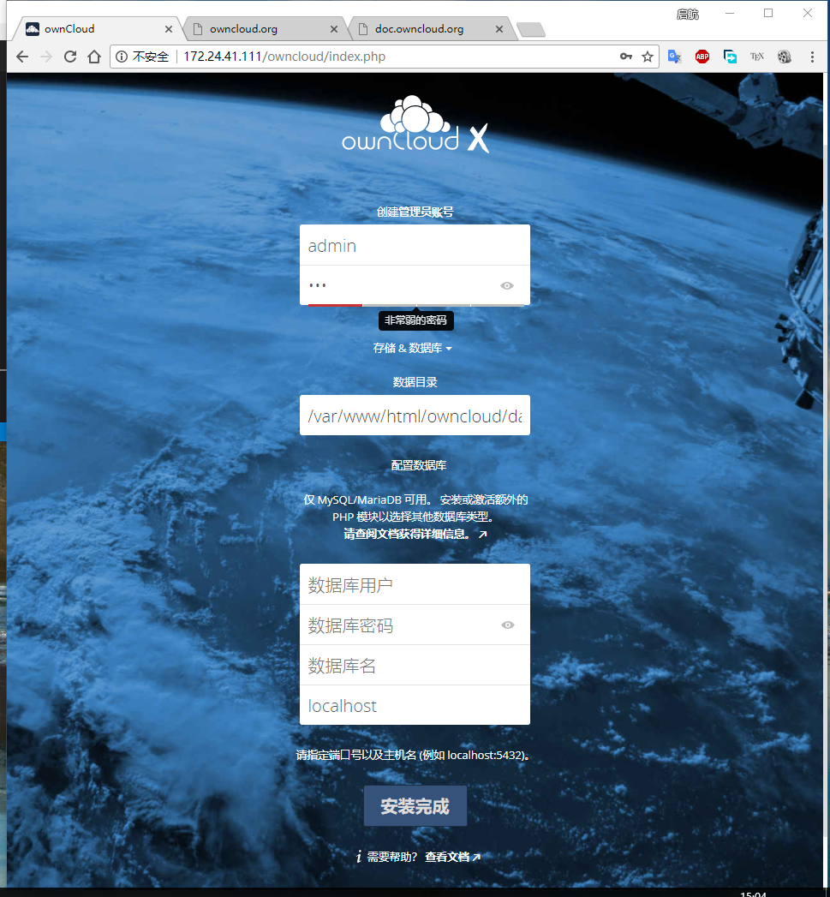
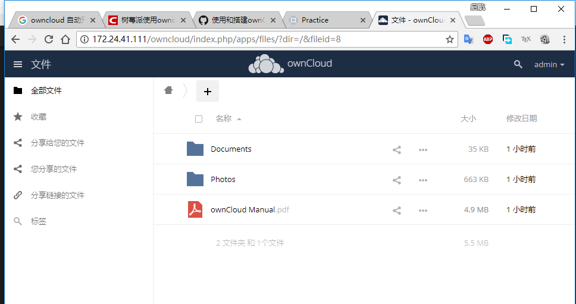

ubuntu18.04安装owncloud
ubuntu18.04安装owncloud
最近实验室闲置了一台主机，就将这个主机搭建成一个公有云给大家使用。 系统版本是ubuntu server。
安装Apache
首先安装apache以供owncloud使用：
需要禁用apache目录列表
开启额外模块
重启apache
安装MariaDB Server
安装完成后添加密码
执行后设置密码、移除匿名用户、不允许root登录、删除测试数据库。 接下来登录MariaDB并创建数据库
下面的命令是建立数据库，其中的用户名和密码需要替换成自己的。
CREATE DATABASE owncloud;
CREATE USER 'oc_user'@'localhost' IDENTIFIED BY 'PASSWORD';
GRANT ALL ON owncloud.* TO 'oc_user'@'localhost' IDENTIFIED BY 'PASSWORD' WITH GRANT OPTION;
FLUSH PRIVILEGES;
EXIT;安装php
现在owncloud只支持php7.1：
sudo apt-get install software-properties-common
sudo add-apt-repository ppa:ondrej/php
sudo apt update
sudo apt install php7.1接着安装php模块：
安装完成后配置一下：
修改以下内容
重启apache
下载owncloud
解压并移动文件：
unzip owncloud-10.0.3.zip
sudo mv owncloud /var/www/html/owncloud/设置目录和权限
为了保证owncloud工作，需要设置操作权限：
完成安装
需要登录到对应的网址(http://ipadress/owncloud)进行最后的设置： 输入你想要的账户名与密码，以及配置数据库的名字。
完成后的界面
